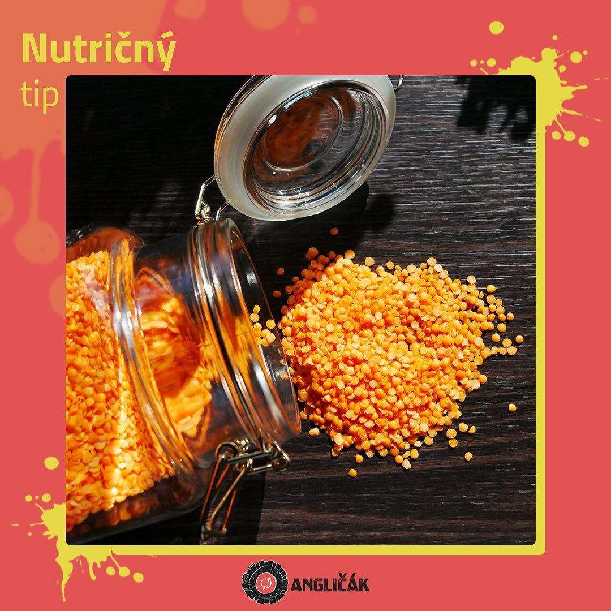

ČERVENÁ ŠOŠOVICA je skvelým zdrojom bielkovín, ale aj sacharidov a vlákniny. Vedeli ste, že obsahuje až 25% rastlinných bielkovín? Práve preto patrí k obľúbeným surovinám vegetariánov a vegánov. Vďaka vysokému obsahu komplexných sacharidov vás dokonale zasýti a jej nízky glykemický index zase pomáha udržať nízku hladinu cukru v krvi. Navyše má vysoký obsah železa, ale aj kopu iných stavebných prvkov, akými sú vápnik, fosfor, zinok. Plus vitamíny skupiny B a C a antioxidanty. Skrátka nutričná bomba, ktorú sa oplatí do svojho jedálnička zaradiť😉
#nutricnytip #anglicak #viacakolenpreteky #cervenasosovica #strukoviny #bielkoviny #vapnik #zelezo #sacharidy #fosfor #zinok #antioxidant #vitaminb #vitaminc